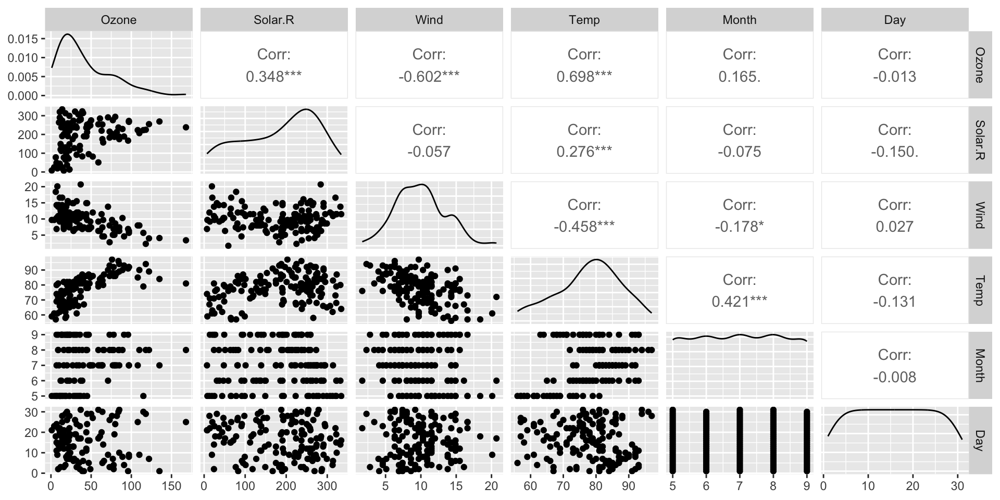
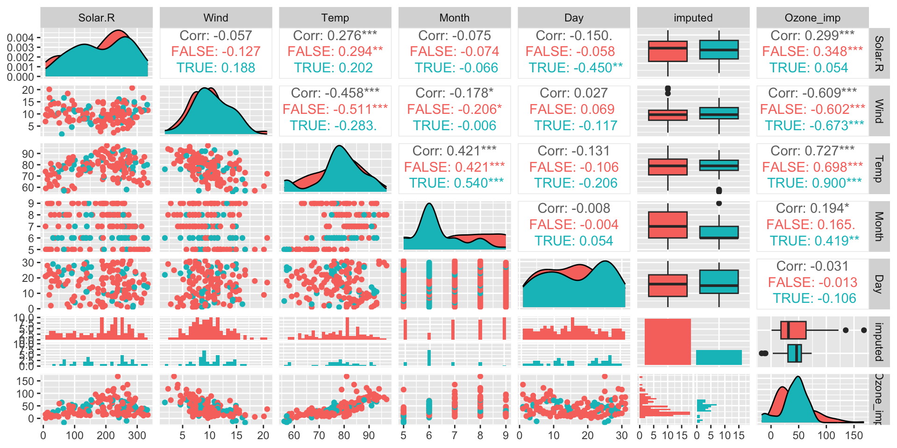

[1] 0 76Imputing Missing Values
2025-10-01
How do we ‘fix’ datasets with missing values?
Approach (1): Complete Case Analysis
Remove samples with missing values:
na.omit,na_dropUse with extreme caution! This is not recommended!!
None of the NHANES data is complete.
Generally, this is a very naive strategy
Approach (2): Impute with mean
Impute missing values with mean - Again, not recommended!
Impact of Imputing with Mean
Mean is unaffected
SD is lowered - affects confidence intervals of estimates
Example: Airquality
The airquality data is a(n ancient) data set in R capturing daily ozone, solar, wind and temperature measurements for 5 months
Some of the ozone measurements are missing
Min. 1st Qu. Median Mean 3rd Qu. Max. NA's
1.00 18.00 31.50 42.13 63.25 168.00 37 How should we impute the Ozone values?
Airquality overview
Model Ozone
Call:
lm(formula = Ozone ~ Temp + Wind, data = airquality)
Residuals:
Min 1Q Median 3Q Max
-41.251 -13.695 -2.856 11.390 100.367
Coefficients:
Estimate Std. Error t value Pr(>|t|)
(Intercept) -71.0332 23.5780 -3.013 0.0032 **
Temp 1.8402 0.2500 7.362 3.15e-11 ***
Wind -3.0555 0.6633 -4.607 1.08e-05 ***
---
Signif. codes: 0 '***' 0.001 '**' 0.01 '*' 0.05 '.' 0.1 ' ' 1
Residual standard error: 21.85 on 113 degrees of freedom
(37 observations deleted due to missingness)
Multiple R-squared: 0.5687, Adjusted R-squared: 0.5611
F-statistic: 74.5 on 2 and 113 DF, p-value: < 2.2e-16Predict Ozone
Use a linear model to predict Ozone values based on covariates
Predict Ozone
Idea for Predictive Mean Matching
Multiple Imputation with mice
iter imp variable
1 1 age income score
1 2 age income score
1 3 age income score
1 4 age income score
1 5 age income score
2 1 age income score
2 2 age income score
2 3 age income score
2 4 age income score
2 5 age income score
3 1 age income score
3 2 age income score
3 3 age income score
3 4 age income score
3 5 age income score
4 1 age income score
4 2 age income score
4 3 age income score
4 4 age income score
4 5 age income score
5 1 age income score
5 2 age income score
5 3 age income score
5 4 age income score
5 5 age income score# Completed datasets
completed_list <- complete(imp, "all") |> map(as_tibble)
# Example: regression model
models <- map(completed_list, ~ lm(income ~ age + group, data = .x))
# Pool results
pooled <- pool(models)
summary(pooled) term estimate std.error statistic df p.value
1 (Intercept) 470791.8482 65283.197 7.2115318 8.696633 5.990158e-05
2 age 559.2458 1617.975 0.3456455 8.407079 7.380997e-01
3 groupB -14630.8597 55358.971 -0.2642907 5.313991 8.015024e-01Sensitivity Analysis
Exercises
- Explore missingness patterns in the
NHANESdataset. Which variables are most affected? - Compare results of a regression model (
BMI ~ Age + Gender) under:
- complete-case analysis,
- mean imputation,
- multiple imputation.
- Discuss: What assumptions are you making under each approach?
Conclusion
- Missingness can bias estimates if ignored.
- Mechanisms (MCAR/MAR/MNAR) determine what methods are valid.
- Naïve fixes are often misleading.
- Multiple imputation and likelihood-based methods are modern, principled approaches.